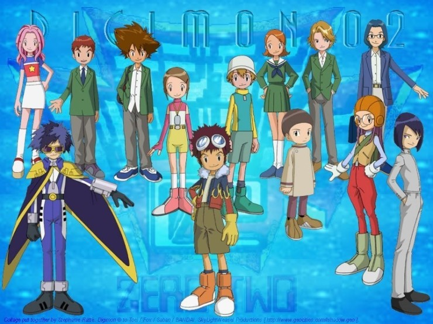
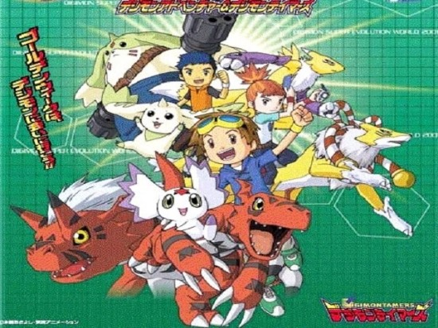
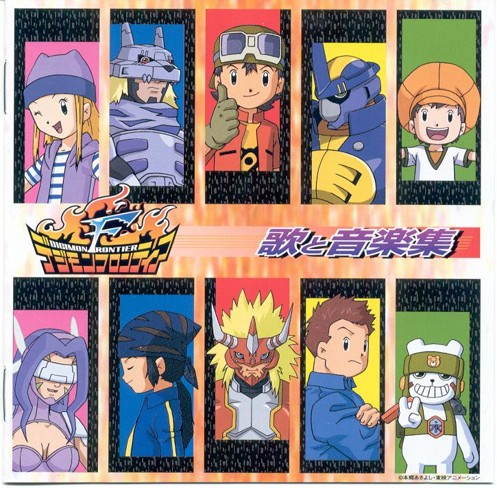

디지몬 시리즈 중 가장 대표적인 작품 스토리 구성은 대략 1쿨 전후에 해당하는 분량이다. 전체적인 전개는 7+1명의 아이들(선택받은 아이들)이 여름 캠프를 떠나 이상한 조류에 휘말려 날아간 이세계(異世界)인 디지털 월드에서 만난 디지몬(디지털 몬스터) 파트너들과 함께 세상을 구하기 위한 모험을 하는 이야기이다. 이 플롯은 15소년 표류기에 그 모티브를 두고 있다. 등장 아이들이 처음에 이세계인 파일섬에 떨어지는 형식의 작품인데 3화까지는 먹고 자는 일에 고난을 좀 겪었다. 보통 노숙을 하게 되며 멤버들이 흩어졌을 때는 디지몬들에게 속아 무임금 착취, 납치등을 당하기도 한다. 어둠의 사천왕 편에서는 최연소 멤버가 목숨을 걸고 진짜 총으로 생존게임을 하는 등의 장면도 있다. 다들 멘탈붕괴와 트라우마를 세트로 달고 다니지 않고 제정신을 유지한다.
선택받은 아이들의 모험이 끝난 지도 3년. 이제는 5학년이 된 리키도 신나리가 다니는 학교로 전학을 오게 된다. 한편 아구몬의 긴급요청을 받은 중학교 2학년생 신태일은 디지몬 카이저에 대한 얘기를 듣게 되고 황급히 선택받은 아이들을 부른다. 이때 최산해와 홍예지 이재하등이 컴퓨터실 부근에 있다가 난데 없는 디지바이스를 얻게 된다. 그들 가운데 최산해가 제일 먼저 브이몬과 만나게 되고 홍예지와 이재하가 차례로 파트너 디지몬인 호크몬 아르마온을 만난다. 디지털 월드의 위기에 다시금 디지털 월드로 향하는 선택받은 아이들. 하지만 어둠의 탑과, 검은 고리에 조종당하는 디지몬 앞에 속수무책인 태일이. 위기에 빠진 태일이를 구하기 위해 리키와 나리. 그리고 새로이 선택받은 아이들이 디지몬 카이저에 맞서 싸운다.
앞서 두 작품이 어느 정도 판타지스러운 세계관을 구축하며 모험의 요소를 강조했다 할 수 있다면, 이 작품은 방영 당시의 현실 세계를 그대로 세계관으로 차용, 디지몬을 좋아하던 아이들이 파트너 디지몬을 만나고 교감해가는 과정을 보여주면서 좀 더 팬들에게 친숙하게 다가가려 했음을 짐작할 수 있다.[6] 앞의 두 작품의 핵심 키워드였던 선택받은 아이들이라는 설정을 완전히 배제하고 대신에 디지몬들과 만난 테이머들이 이야기를 이끌어 나가고 있다. 또한 각각 8, 6명이었던 전작 주인공들과 달리 테이머들 중에서도 3명이 이야기의 중심에 서있으며 이 3명의 아이들의 정신적인 성장이 이 만화의 중심 내용이다.
디지몬 시리즈의 4번째 작품. 3부 시리즈인 테이머즈까지는 인간과 디지몬의 우정과 모험이란 큰 축을 토대로 이루어지는 스토리가 중심이지만 프론티어는 인간 자체가 디지몬으로 변신하여 진화한다는 확연히 다른 설정에서 출발한다. 휴대전화의 정체를 알 수 없는 목소리에 이끌려 디지털 세계에 오게 된 다섯 명의 아이들이 그 옛날 루체몬 밑에서 신음하던 디지털 월드를 구해냈다는 전설의 열 명의 용사들이 남긴 스피릿을 찾아내 디지바이스에 저장하고 위기가 닥쳐오면 스피릿을 불러내 그 데이터를 몸에 휘감음으로써, 아이들 자신이 디지몬으로 진화한다. 우연히 우정훈이 아그니몬으로 진화하는 모습을 목격한 볼록몬과 네이몬은 케루비몬으로 인해 황폐해진 디지털 세계에 평화를 되찾아 달라고 부탁하고, 아이들은 부탁을 받아들여 자신들과 적대 관계에 있는, 또 다른 용사의 스피릿을 이어받은 5명의 디지몬들과 싸우며 디지털 세계를 여행하게 된다.
돌아가기| 제목 | 발매일 | 플랫폼 | 등급 | 테마 |
| 놀러오세요 동물의 숲 | 2005.11.23 | NDS | 전체 | 숲 속 마을 |
| 타운으로 놀러가요 동물의 숲 | 2008.11.20 | Will | 전체 | 마을에서 번화가로 버스타고 이동 |
| 튀어나와요 동물의 숲 | 2012.11.08 | 3DS | 전체 | 주인공이 촌장되어 마을운영 |
| 모여봐요 동물의 숲 | 2020.3.20 출시예정 | Switch | 전체 | 캠핑 |